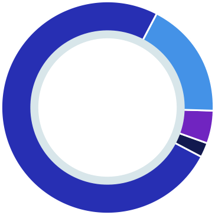

О проекте
Опцион – это договор, согласно которого покупатель опциона получает право, не обязательство, совершить покупку или продажу актива по заранее оговоренной цене, на протяжении определенного отрезка времени в будущем. При этом продавец опциона несёт обязательство соответственно продать актив или купить его у покупателя опциона в соответствии с его условиями.
Согласитесь, звучит крайне сложно! Именно поэтому проект разделен на 2 направления: опционную биржу и страховую компанию.
-
Трейдеры и хэджфонды заключают сделки по купле-продаже опционов на биржу
-
Все остальные клиенты, не желающие разбираться с тем как работают опционы, могут купить или продать страховку как на рост, так и на падение каждой из основных криптовалют.
Клиент платит страховой взнос в размере 0.1 биткойна на депозит размером 3 биткойна. И получает право, если цена снизится в течение 3 дней на 15%, получить страховку в сумме, на которую упадет депозит, а именно 0.45 биткойна. При наступлении страхового случая, INSURCOIN выплачивает клиенту страховку из ранее полученных страховых премий. Если страховой случай не произошел, то выплаченный клиент страховой взнос идет в доход компании.
INSURCOIN позволяет застраховать риски падения или роста цены на основные криптовалюты.
Проблема: Отсутствует возможность застраховать депозит в биткойнах или эфирах от падения. При этом на рынке присутствует повышенная волатильность, из-за которой люди боятся хранить существенные средства в криптовалюте. С другой стороны крупные компании не спешат приходить на рынок (например, принимать оплату в криптовалюте) по этой же причине.
Решение: Работа биржи начнется с 5 криптовалютами, имеющими максимальный маркеткап. Далее, по мере роста спроса и оборотов, будут подключаться дополнительные криптовалюты. INSURCOIN продает страховку, как на рост, так и на падение биткойна или эфира. Собственный риск INSURCOIN переупаковывает и продает/покупает в виде опционов на собственной бирже.
INSURCOIN создает первую опционную биржу.
Проблема: Не существует специальной криптовалютной биржи, на которой можно купить/продать опционы.Главным страхом перед созданием такой биржи служит опять-таки повышенная волатильность. Всем кто имеет дело с опционами на акции, нефть или пшеницу, кажется, что риски огромны.
Решение: Главный страх перед опционами на криптовалютном рынке состоит в повышенной волатильности. Так ли это на самом деле?
Рассмотрим пример с привычным всем фондовым рынком. Например, клиент продал опцион на акцию компании ZZZ. Сегодня суббота, рынок закрыт. Выходит неожиданная хорошая новость и акция вырастает в 2-10 раз на открытии рынка в понедельник. В свою очередь продавец опциона несет огромные убытки.
Криптовалютный рынок открыт 24 часа в сутки. За все время его существования не было новости, вызвавший гэп на BTC или ETH хотя бы на 10% Фактически криптовалютный рынок, если речь идет только о голубых фишках (монетах) намного безопаснее для продавцов опционов, чем другие привычные нам рынки.
Появление опционов дает возможность осуществления коротких продаж.
Проблема: До сих пор на криптовалютном рынке отсутствует возможность коротких продаж. Никто не может продать в короткую криптовалюту, физически отсутствующую на счете. Это снижает возможности спекулянтов, сглаживающих колебания цен на других рынках. И в свою очередь ведет к росту волатильности и п. 1 и 2.
Решение: Не имея физически биткойна или эфира, можно приобрести опцион на их падение, фактически осуществив непокрытую продажу. Эта возможность приводит на рынок огромное количество новых трейдеров, инвесторов и спекулянтов, а также хэджфондов, ставящих не только на рост, но и на падение рынков.
Почему сейчас?
-

В мире существует около тысячи криптовалютных бирж и ни одной опционной. Мы забираем весь рынок
-

Стремительный рост интереса хэджфондов к рынку криптовалют не удовлетворен из-за отсутствия опционов и возможности коротких продаж
-

Мы собрали команду профессионалов, знающих все про рынок опционов и готовы совершить на нем не революционные, а инновационные изменения
Объем рынка
Капитализация криптовалютного рынка составляет сотни миллиардов долларов. А ежедневный объем торгов находится на уровне 10-20 миллиардов долларов США.
Размер рынка опционов на биржевые товары и акции, от страны к стране, равен 1-5% от размера рынка базового актива. Таким образом, мы можем рассчитать потенциальный объем рынка опционов для основных криптовалют в размере 50-250 миллионов долларов в день.
Однако в расчетах не учитывается, что опционы фактически предоставляют возможность коротких продаж, осуществить которые на криптовалютных биржах на сегодня нельзя. Это будет способствовать дополнительно росту спроса на инструмент со стороны продавцов.
Монетизация
INSURCOIN имеет два главных источника дохода
-
Опционная биржа
Прибыль генерируется в виде торговой комиссии с каждой операции по купле продажи опционов. Она составляет 0.5% с каждой операции или 1% на круг для каждой из сторон сделки.
Учитывая волатильность опционов и огромные возможности для получения прибыли, данная комиссия не является существенной для участников рынка. Однако она позволяет бирже получать высокий доход, по сравнению с обычными криптовалютными биржами, в связи с полным отсутствием конкуренции.
-
Страховая компания
Прибыль генерируется за счет продажи страховок на рост / падение криптовалют. Спред между ними будет держаться на уровне 20%
Потенциал роста токена INSUC
Компания INSURCOIN разработала простую и понятную модель роста стоимости токена INSUC. С каждой полученной опционной биржей комиссии, 30% средств будут направлены в фонд ликвидности. Каждый следующий месяц INSURCOIN направляет их на выкуп токенов INSUC с рынка и их сжигание.
Такая бизнес-модель принята исключительно в интересах наших инвесторов. Обещание выкупа токенов с будущей прибыли не может быть прозрачным. Более того, биржа или платформа может физически никогда прибыли не иметь. В случае с токенами INSURCOIN инвесторы точно знают, что каждая сделка по покупке/продажи опциона, генерирует денежный поток, идущий на выкуп токенов.
Это позволяет постоянно смещать рыночное равновесие, увеличивая спрос на токены INSUC.
При обороте в 50 млн. $ в день, комиссия с обеих сторон сделки составит 500.000$ или 15 миллиона долларов в месяц. 30% от этой суммы или 5 миллионов долларов, ежемесячно направляются на выкуп токенов INSUC с рынка.
100 000 000 токенов INSUC будет выпущено
Распределение токенов

75%
Размещается
на ICO
18%
Резервируется
за командой проекта
5% Менторы
2% Bounty программа
| Стоимость токенов | 3000 токенов INSUC = 1 ETH |
| Дата проведения ICO | 1 октября 2018 года - 30 ноября 2018 года |
| Минимальная сумма сбора | $0.5 M |
| Основная цель ICO | $5 M |
| Максимальная сумма сбора | $10 M |
*Все токены, которые не будут выкуплены в процессе размещения, уничтожаются.
Покупка токена INSUC проводится за биткойны или эфиры.
Распределение собранных средств

50%
Разработка и запуск
опционной биржи
25% Резервный фонд
15% Маркетинг
5% Юридические услуги
5% Операционные расходы
Дорожная карта
-
Формирование концепции страхования криптовалютного рынка и биржи INSURCOIN
Февраль 2018 -
Формирование
Март - апрель 2018
команды проекта -
Изучение рынка, выявление
Май 2018
конкурентных преимуществ -
Начало
Июнь 2018
подготовки ICO -
Запуск опционной биржи
Февраль 2019
с 5 криптовалютами -
Листинг токенов
Декабрь 2018
INSUC и листинг
на криптовалютных биржах -
Проведение
Октябрь - ноябрь 2018
ICO -
Рекламная
Август - сентярь 2018
компания -
Начало продаж страховок
Март 2019
на рост/падение рынка -
Первый выкуп токенов
Апрель 2019
с рынка и их сжигание -
Добавление 3 новых
Май 2019
криптовалют -
Ежедневный оборот:
Июль 2019
10 миллионов долларов -
Добавление 2 криптовалют
Декабрь 2019
(всего 10) на биржу -
Добавление 2 криптовалют
Декабрь 2019
(всего 10) на биржу -
Добавление 2 криптовалют
Декабрь 2019
(всего 10) на биржу -
Добавление 2 криптовалют
Декабрь 2019
(всего 10) на биржу
Команда проекта
-
Антонио Касалена
Генеральный директор
Основатель -
Елена Володина
Креативный директор
Основатель -
Михаил Константинов
Начальник
финансового отдела -
Кристина Шубина
Менеджер проектов
-
Виктория заречная
Маркетолог
-
Виктор Васильев
Специалист по продажам
-
Ян Лин
UI / UX специалист
-
Алексей Дружинин
Web-разработчик